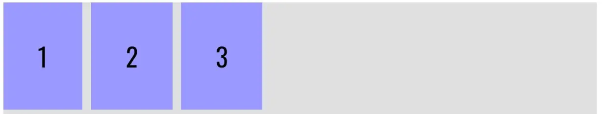
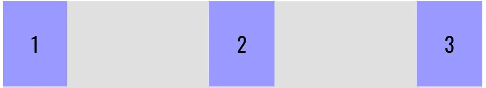
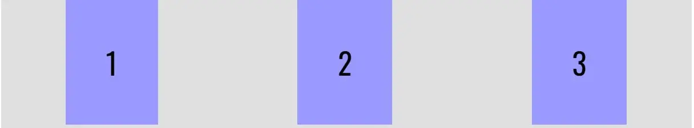
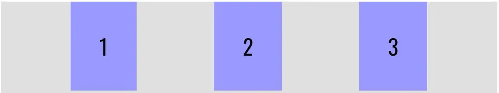

CSS Flexbox 101
July 29th, 2022
As a web developer of old, trying to get all of your elements aligned just the way you wanted took a lot of time. How did we do it, you ask? I’ll tell you (but the answer may frighten you)….
“Table” tags. ”Table” tags as far as the eye could see.
Sure, the “float” property in CSS alleviated a lot of that pain and struggle. However, it did introduce its own set of problems that had to be addressed with a well placed “clear” property somewhere within your CSS file.
But that all changed with the introduction of CSS Flexbox. It is easily one of CSS’s best features to have been created in the last decade, and has made the “float / clear” combination a thing of the past.
In this article, I’m going to teach you the basics to get started with Flexbox. Even with only learning the basics, you will discover the potential power that Flexbox contains.
What Exactly is Flexbox?
CSS Flexbox is a way to structure the layout of elements within a web page. It contains two major components: the container and that container’s flexbox items. The container acts as the parent of any of the flexbox children items that reside within the container. You can customize that container to display each of those flexbox items as you deem to be fit. If there is one or more specific flexbox items within the container that you’d like to behave differently from the rest of the items, you can customize those as well.
How to Use Flexbox
The first step that you need to take if you want to use Flexbox is to give your container the display: flex property. Right away, you will see that any flexbox items that are in your flex container are now sitting side by side from left to right across what is known as the “Main Axis”. To go from up and down vertically, it would be going down the “Cross Axis”.
If you want to work on aligning the flex items along the Main Axis, you will want to work with the “justify-content” property. By default, this property is set to “flex-start”. An example of what this would look like is this:
But what if you wanted to have your items centered? That’s where justify-content: center comes in!
Looking to have your items spread out evenly? justify-content: space-between is what you are looking for.
If you want your items to be spread out, but not take up the entire width of your container, then you will want to use justify-content: space-around.
However, if you want a little more breathing room on each side of your container, then use justify-content: space-evenly
To Be Continued...
This is only the beginning of the power that CSS Flexbox possesses! In my next article, I will go over some more commonly used properties of Flexbox.